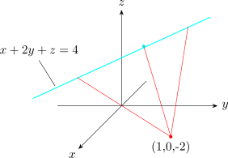

1.5 Maximum and Minimum Values
A function of two variables has a local maximum at \((a,b)\) if \(\displaystyle {f(x,y)\leq f(a,b)}\), when \((x,y)\) is near \((a,b)\). The number \(f(a,b)\) is called the maximum value.
If \(f(x,y)\geq f(a,b)\) when \((x,y)\) is near \((a,b)\), then \(f\) has a local minimum at \((a,b)\) and \(f(a,b)\) is the minimum value of the function.
If \(f\) has a local maximum or minimum at \((a,b)\) and the first partial derivatives \(f\) exists at that point, then \[f_x(a,b) = 0\hspace {0.5cm},\hspace {0.5cm} f_y(a,b) = 0\] A point \((a,b)\) is a critical point (or stationary point) if \(f_x(a,b)=0\hspace {0.2cm},\hspace {0.2cm}f_y(a,b) =0\) or if one of the partial derivatives do not exist.
Not all critical points give rise to maximum or minimum. At a critical point, a function could have a max, min, neither.
Let \(f(x,y) = x^2 + y^2 - 2x -6y + 14.\hspace {0.2cm}\) Classify any critical points.
Solution.
\(f_x(x,y) = 2x -2 = 0\)
\(f_y(x,y) = 2y - 6 =0\)
\[ \implies \hspace {1cm} x =1 \hspace {0.2cm} \text {and}\hspace {0.2cm} y =3\]
\((1,3)\) is a critical point of the function.
\begin {align*} f(x,y) & = x^2 -2x + 1-1+y^2 -6y +9 -9 + 14\\ & = 4 +\big (x-1)^2 + (y-3)^2 \end {align*}
\[(x - 1)^2 , (y-3)^2\geq 0\]
\(\therefore \hspace {0.3cm}f(x,y)\geq 4\) for all values of \(x\) and \(y\).
\(f(1,3) =4\) is a local minimum, and in this case it is an absolute minimum.
Solution.
\(f_x(x,y) = -2x =0\hspace {0.3cm},\hspace {1cm} f_y(x,y) = 2y =0\)
\(\implies \hspace {0.7cm} (0,0)\) is a critical point.
On the \(x-\) axis, \(y=0\) \(\hspace {0.5cm} f(x,y) = -x^2 <0\)
On the \(y-\) axis, \(x=0\) \(\hspace {0.5cm} f(x,y) = y^2> 0\)
\(\therefore \hspace {0.3cm} f(0,0) = 0\) is not an extreme value of \(f\).
Second Derivative Test
Suppose the second partial derivatives of \(f\) are continuous on a disk with \((a,b)\) and suppose that \(f_x(a,b)=0\hspace {0.1cm},\hspace {0.1cm} f_y(a,b) =0\). Let \[D = D(a,b) = f_{xx}(a,b)f_{yy}(a,b) -\big (f_{xy}(a,b)\big )^2\]
- 1.
- If \(D> 0,\hspace {0.1cm} f_{xx}(a,b)>0\) then \(f(a,b)\) is local minimum.
- 2.
- If \(D>0,\hspace {0.1cm} f_{xx}(a,b)<0\) then is a local maximum.
- 3.
- If \(D<0\), then the point \(f(a,b)\) is not a maximum of minimum.
\[ D = \begin {vmatrix} f_{xx} & f_{xy}\\ f_{xy} & f_{yy}\\ \end {vmatrix}\]
Solution.
\(f_x = 4x^3 - 4y =0\)
\(f_y = 4y^3 - 4x =0\)
\(\implies \hspace {1cm} y =x^3\hspace {0.2cm},\hspace {0.2cm} x = y^3\) and substituting \begin {align*} 0 & = x^9 -x\\ & = x(x^8 -1)\\ & = x(x^4 + 1)(x^4 -1)\\ & = x(x^4 + 1)(x^2 + 1)( x^2 -1)\\\\ \therefore \hspace {0.4cm} x & = 0, 1, -1\\ \implies \hspace {0.4cm} y & = 0,1, -1 \end {align*}
\(\therefore \hspace {0.3cm} (0,0), (1,1)\) and \((-1,-1)\) are critical points
\(f_{xx} = 12x^2\hspace {1cm} f_{xy} = -4\)
\(f_{yy} = 12y^2 \hspace {1cm} f_{yx} = -4\)
\(D = f_{xx}f_{yy} - \big (f_{xy}\big )^2\)
\(D(0,0) = 0\cdot 0 - 16 <0\)
\(D(1,1) = 12\cdot 12 - 16 >0 \hspace {1cm} f_{xx} = 12 >0\)
\(D(-1,-1) = 12\cdot 12 - 16 >0\hspace {1cm} f_{xx} = 12 >0\)
\((0,0)\) is neither max nor min
\((1,1)\) is local minimum
\((-1,-1)\) is local minimum
\[f(1,1) = -1\hspace {1cm} f(-1,-1) = -1\hspace {1cm} f(0,0) =1\]
Find the shortest distance from the point \((1,0,-2)\) to the plane \[x + 2y + z = 4\]
Solution. \begin {align*} d & = \sqrt {(x-1)^2 + y^2 + (z + 2)^2}\\ & = \sqrt {(x-1)^2 + y^2 + (4-x-2y +2)^2}\\ & = \sqrt {(x-1)^2 + y^2 + (6-x-2y)^2} \end {align*}
\[f(x,y) = (x-1)^2 + y^2 + (6-x-2y)^2\]
\begin {align*} f_x & = 2(x -1) -2(6 - x -2y)\\ & = 4x + 4y - 14 \end {align*}
\begin {align*} f_y & = 2y - 4(6 - x - 2y)\\ & = 4x + 10y - 24 \end {align*}
\(f_x = 4x + 4y - 14 = 0\)
\(f_y = 4x + 10y - 24 = 0\)
The only critical point \(\bigg (\dfrac {11}{6},\dfrac {5}{3}\bigg )\)
\[f_{xx} = 4\hspace {0.4cm}, \hspace {0.4cm} f_{yy} = 10\hspace {0.4cm}, \hspace {0.4cm} f_{xy} = 4\]
\begin {align*} D & = f_{xx}f_{yy} -\big (f_{xy}\big )^2\\ & = 4(10) - (4)^2 = 24 >0 \end {align*}
\(D = 24>0\hspace {0.2cm},\hspace {0.2cm} f_{xx} = 4 >0,\hspace {0.5cm}\bigg (\dfrac {11}{6},\dfrac {5}{3}\bigg )\) is a minimum.

Questions on this section
Stuck on something here? Ask below and it stays attached to this topic.